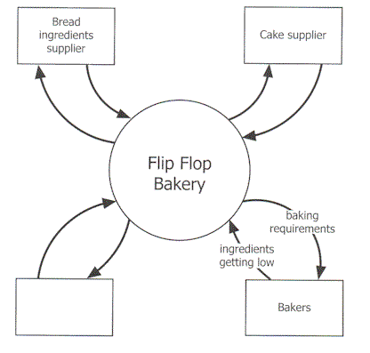
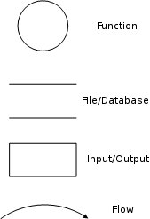
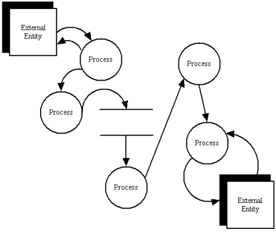
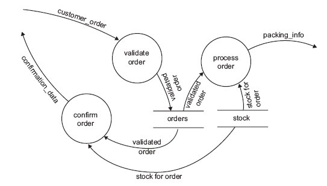
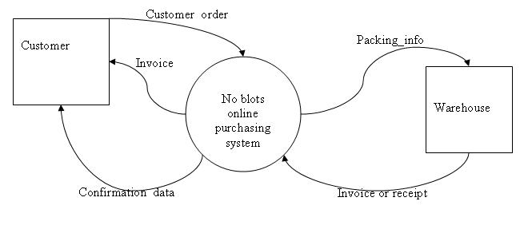
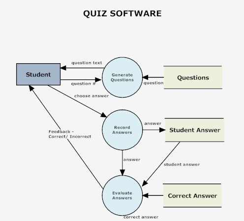
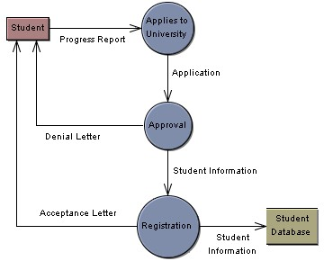

DFD - Data Flow Diagrams |
||||
Very similar to system flow charts which are not used as much any more |
||||
|
A data flow diagram (DFD) is a design tool to represent the flow of data through an information system. A "context level" DFD can be used to show the interaction between a system and outside entities; it can also show the internal data flows within a system. This version is also called a context diagram. It often shows the information system as a single circular shape with no details of its inner workings: what it shows is its relationships with the external entities.  Above: an example of a context diagram for Flip Flop Baker, from the 2007 SD Exam For a diagram to be called a DFD, it needs to show the inner workings of an information system. The different levels of a DFD indicate how detailed it is, e.g. a Level 0 DFD is a broad overview of a system, showing hardly any detail within the system. A level 2 DFD explodes more summarised processes and shows another level of complexity within them. A level 3 or 4 DFD shows even more components opened up to show their inner details. With a dataflow diagram, developers can map how a system will operate, what the system will accomplish and how the system will be implemented. It's important to have a clear idea of where and how data is processed in a system to avoid double-handling and bottlenecks. A DFD also helps management organise and prioritise data handling procedures and staffing requirements. A DFD lets a system analyst study how existing systems work, locate possible areas prone to failure, track faulty procedures and reorganise components to achieve better efficiency or effectiveness. Components A data flow diagram graphically represents:
(DFDs can also show resource flows, but it's better to avoid them in VCE IT - they can easily get confused with data flows.) Here are the basic DFD shapes :DFD Conventions
|
||||
| 
A sample DFD from http://www.smartdraw.com
|
||||
As you explore DFDs you will find two 'flavours' out there: the Yourdon and Coad style, and the Gane and Sarson
|
||||
A DFD EXAMPLE from the 2006 Information Systems Exam(copyright of the VCAA - thanks to them for letting me use the material)A company, No Blots, supplies ink cartridges for printers which are sold only through the internet. When customers place an order, the order is checked, a confirmation is sent back to the customer and the details of the orfer are sent to the warehouse. The diagram below shows the data flow diagram (DFD) for the No Blots online purchasing system. The diagram does not show the data sources and destinations.  a. In a DFD a circle represents a process. Briefly explain what is meant by a process. (1) A process is some form of processing or data transformation which take data as input, does something to it, and provides outputs b. In the DFD, what do the symbols labelled stock and orders represent? (1) They are data stores, including electronic stores such as databases, and physical stores such as filing cabinets or stacks of paper. c. Complete the context diagram below for the No Blots system. (3) This is the completed diagram...  It seems that we need to provide an input to the warehouse from the online purchasing system (OPS). We would also need to add an external entity, the customer, and link the customer to the OPS. I'm only guessing that the warehouse must send some form of invoice or receipt or packing slip to the customer when the goods are shipped. As a tip: I used Word's drawing tools (basic shapes, connectors) to draw the DFD. The connector arrows move around when you move connected shapes. Add text to shapes by right-clicking the shape and selecting "Add text". Add text to arrows the hard way with a text box (formatted to have no fill and no lines). |
||||
SAMPLE DFDs |
||||
http://www.smartdraw.com/examples/preview/index.aspx?example=Quiz_Software  |
||||
An example from www.visualcase.com - you can download a 30 day free trial of their DFD software  "Student" box is an external entity. |
||||
ThanksThanks to these sources for some excellent ideas for this page:
|
Back to the IT Lecture Notes index
Back to the last page you visited
Created 12 Feb 07
Last changed: February 21, 2013 11:45 AM
VCE IT Lecture notes © Mark Kelly 2001-
{kind=link}